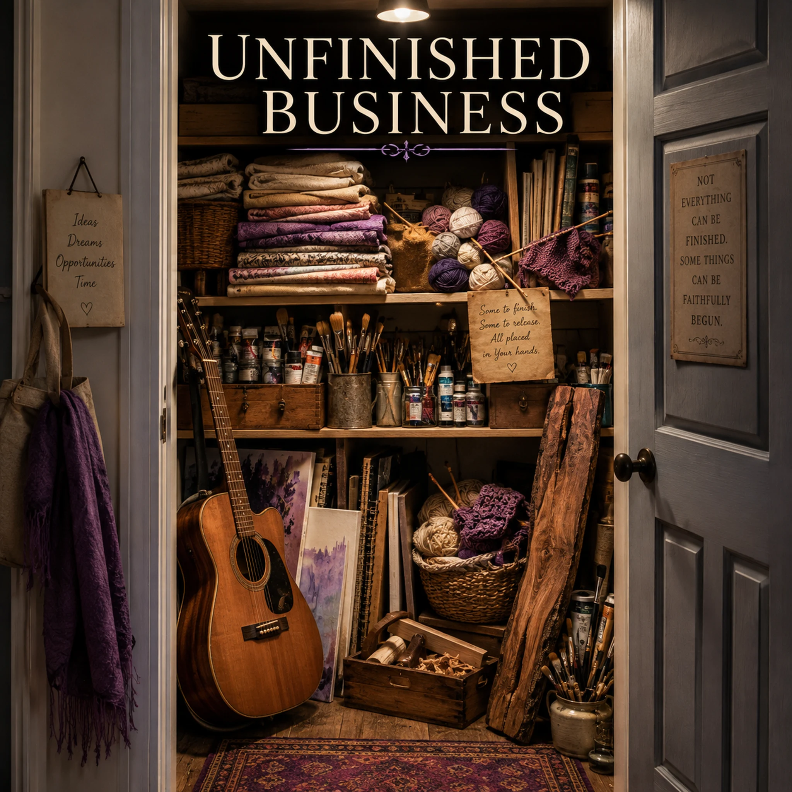

Unfinished Business

Lyrics
Verse 1
Letters never sent...
Still folded in a drawer.
Words that never crossed the miles
Between one heart and yours.
Pre Chorus
We have more ideas than years.
More dreams than sweat and tears.
More opportunities than strength.
More work than time has length.
Chorus
Before another song is made...
Before another project’s due...
Lord, help me see what's mine to finish...
And what's OK to leave with You.
Verse 2
Quilts never made...
Fabric waiting on the shelf.
Warmth imagined years ago...
Still folded in itself.
Pre Chorus
We have more ideas than years.
More dreams than sweat and tears.
More opportunities than strength.
More work than time has length.
Chorus
Before another song is made...
Before another project's due...
Lord, help me see what's mine to finish...
And what's OK to leave with You
Verse 3
Wood with figure like a flame...
Waiting for a craftsman's hand.
Music sleeping in the grain...
Never made into something grand.
Bridge
Someone waiting for compassion...
Someone longing to be known...
Lord, was there a seed You gave me...
That I’ve somehow never sown?
Pre Chorus
We have more ideas than years.
More dreams than sweat and tears.
More opportunities than strength.
More work than time has length.
Chorus
Before another song is made...
Before another season's through...
Lord, help me see what's mine to finish...
And what's OK to leave with You.
Devotional
Unfinished Business — The Wisdom to Finish, the Grace to Release
There is something deeply human about unfinished things. A letter written but never mailed. Fabric carefully selected for a quilt that was never sewn. A beautiful piece of wood waiting for the craftsman's hand. Each represents an intention, an idea, perhaps even an expression of love that never quite found its way into completion.
We accumulate these things throughout our lives. Not necessarily because we are careless or irresponsible, but because our imaginations often reach farther than our available time, strength, and circumstances will allow. We see possibilities everywhere. We begin with enthusiasm. We make plans. And somewhere along the way, life intervenes.
The song, Unfinished Business, asks a question that becomes increasingly important as the years pass: How do we distinguish between the things God has entrusted to us and the things we simply hoped to accomplish?
Ecclesiastes 3:1 reminds us, “To every thing there is a season, and a time to every purpose under the heaven.” Seasons change. Our responsibilities change. Our abilities change. What was appropriate and possible during one season of life may no longer belong to another. Wisdom recognizes that not every opportunity is a calling, and not every unfinished project represents a failure.
Yet Scripture also teaches that our lives have purpose beyond our personal ambitions. Ephesians 2:10 declares, “For we are his workmanship, created in Christ Jesus unto good works, which God hath before ordained that we should walk in them.”
Notice the distinction. We are not instructed to accomplish every good thing we can imagine. We are called to walk in the good works God has prepared for us. Our responsibility is not unlimited productivity but faithful obedience.
This changes how we examine our unfinished business.
A quilt might have been intended to comfort someone. A letter might have carried forgiveness, encouragement, or gratitude. A song might have communicated a truth that another person desperately needed to hear. Sometimes the unfinished object is merely an object. Sometimes it represents an opportunity to serve.
And sometimes the opportunity has passed.
That possibility can be painful. We may wish we had spoken sooner, acted more generously, or recognized a need while we still had the chance. But regret cannot restore yesterday. It can, however, teach us to recognize the opportunities God places before us today.
Galatians 6:10 instructs us, “As we have therefore opportunity, let us do good unto all men, especially unto them who are of the household of faith.”
Those words deserve careful attention: “As we have therefore opportunity.”
Opportunities are not always permanent. A person who needs encouragement today may not be within our reach tomorrow. A relationship requiring reconciliation may not remain open indefinitely. A small act of compassion may seem insignificant until we realize how deeply it mattered to the person receiving it.
This is where the bridge of the song becomes especially searching. After describing unfinished creative projects, the focus suddenly turns toward someone waiting for compassion, someone longing to be known.
The question is no longer simply, What have I failed to finish?
It becomes, Whom have I failed to notice?
Jesus addressed the distinction between activity and spiritual priority in the account of Mary and Martha. In Luke 10:38–42, Martha was occupied with serving while Mary sat at Jesus' feet and listened to His teaching. Martha's work was not inherently wrong. Hospitality was a worthy expression of service. But Jesus told her, “thou art careful and troubled about many things: But one thing is needful.”
Martha's difficulty was not that she had work to do. It was that her preoccupation with that work had obscured what mattered most in that moment.
We can become so occupied with doing good things that we overlook the better thing God has placed directly before us.
This is not an argument against diligence. Colossians 3:23 instructs believers, “And whatsoever ye do, do it heartily, as to the Lord, and not unto men.” Faithfulness matters. Excellence matters. Completing responsibilities matters. But the same passage reminds us that “ye serve the Lord Christ” (Colossians 3:24).
Our work is ultimately accountable to Him, not to the endless list of expectations we create for ourselves.
That distinction is liberating, but it also requires discernment.
Some unfinished things need our attention because they represent genuine responsibilities. A promise made should not be casually abandoned. A relationship damaged by our actions may require repentance and an effort toward reconciliation. A ministry entrusted to us deserves thoughtful stewardship.
Other things can be released without guilt. A hobby that no longer brings joy, an idea that belonged to another season, or a project that has become more burden than blessing may simply have reached the end of its usefulness.
Faithfulness does not mean finishing everything. It means being faithful with what God has actually entrusted to us.
And there is another truth we must remember: our limitations do not limit God's ability to accomplish His purposes.
Philippians 1:6 gives believers this assurance: “he which hath begun a good work in you will perform it until the day of Jesus Christ.”
We are unfinished works ourselves.
God is still teaching us, correcting us, strengthening us, and transforming us. We do not complete our own sanctification through determination or productivity. The Lord who began His work in us remains faithful to continue it.
This does not excuse neglect or disobedience. Rather, it reminds us that the outcome of our lives rests in hands far more capable than our own.
There is a difference between surrendering something to God and simply refusing to do what He has commanded. Discernment requires prayer, honest examination, and a willingness to obey even when obedience is inconvenient.
Galatians 6:9 encourages us, “And let us not be weary in well doing: for in due season we shall reap, if we faint not.” Some things must be patiently continued. Others must be lovingly released. Wisdom is learning which is which.
Perhaps the most meaningful inventory of our unfinished business is not found in closets, drawers, workshops, or notebooks. Perhaps it is found in our relationships, our opportunities for service, and the quiet promptings of God's Word that we have postponed.
Is there someone we need to forgive? Someone we should thank? A kindness we have intended but never offered? A conversation we have avoided? A responsibility we have neglected because something more interesting captured our attention?
Those are worth bringing before the Lord.
And then there are the unfinished dreams that simply need to be placed in His hands. Not every beautiful idea must become a completed work to have had meaning. Sometimes the dreaming itself taught us something. Sometimes a project prepared us for another purpose. Sometimes releasing an ambition creates room for an act of service we might otherwise have missed.
We are finite people serving an infinite God. Our days are numbered, our strength is limited, and our opportunities must be chosen with care.
But our limitations need not become a source of despair.
We can work diligently without believing everything depends upon us. We can acknowledge our failures without allowing regret to consume the time we still have. We can release cherished plans without concluding that our lives have been wasted.
And we can begin each day with a simpler, more faithful prayer:
Lord, show me what is mine to finish, what is mine to begin, and what I may safely leave with You.
The goal is not to reach the end of life with every shelf empty and every project completed.
It is to have walked faithfully with the Lord, served the people He placed before us, and trusted Him with everything beyond our reach.
Some things are ours to finish. Some things are ours to release. And all things are ultimately in His hands.
A Moment for Reflection
What unfinished responsibilities have I been avoiding that genuinely require my attention?
Are there projects or ambitions I continue carrying out of guilt rather than conviction?
Is there someone waiting for compassion, encouragement, forgiveness, or simple companionship whom I have overlooked?
Am I measuring the value of my life by what I produce, or by my faithfulness to the Lord?
Closing Prayer
Heavenly Father, You know the many things I have begun, the dreams I have carried, and the opportunities I have missed. You know my limitations better than I know them myself. Please give me wisdom to recognize the responsibilities You have entrusted to me and the courage to complete what obedience requires. Forgive me for the times I have been so occupied with my own plans that I have overlooked someone who needed my love or compassion. Help me to distinguish between worthwhile work and unnecessary burdens. Teach me to release what no longer belongs to this season of my life without bitterness or regret. Thank You for Your promise to continue the good work You have begun in me. May the time and strength I have remaining be used faithfully in Your service. And when there are things I cannot finish, help me entrust them peacefully to Your capable hands. In Jesus’ name, Amen.
Extra Info — Scripture Map
A season for every purpose: Ecclesiastes 3:1
Created for good works: Ephesians 2:10
Doing good while there is opportunity: Galatians 6:9–10
The better portion: Mary and Martha: Luke 10:38–42
Work as service to Christ: Colossians 3:23–24
God finishes the work He begins: Philippians 1:6